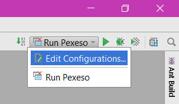
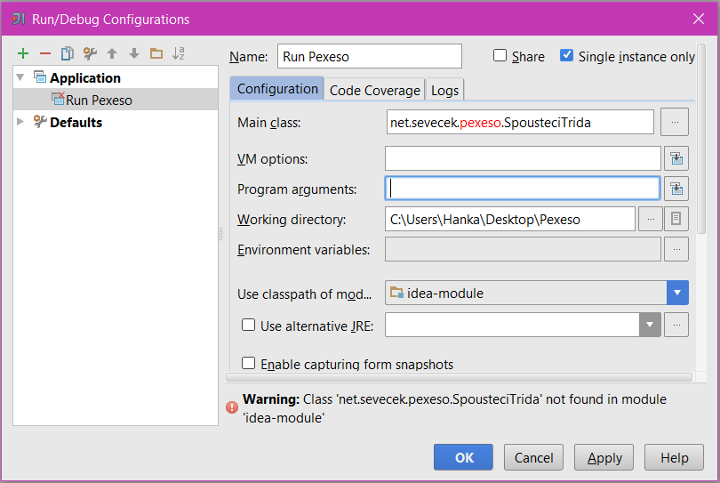

Lekce 11
ŽENY,
na naší poslední lekci Kamča shrnul, co jste se od začátku kurzu naučily, a prošel jednotlivé projekty, kde jste si mohly získané
vědomosti prohlédnout a zavzpomínat...
Nově jsme si ukázali, jak to udělat, když chcete vaše projekty distribuovat dál. A jak, že to bylo?
- Zkopírujte si složku projektu, napřílad na Plochu.
Já si pro příklad vybrala projekt s pexesem. Zkopíruji tedy složkuC:\Java-Training\Projects\Pexeso2\doC:\Users\Hanka\Desktop\ - Z některého z předchozích projektů zkopírujte .bat soubor. Je to nejjednodušší a nejrychlejší způsob, jak jej vytvořit.
Navíc profíci také používají šablony, aby šetřili čas. ;-)
Já jsem našla .bat soubor v projektu Farmářka, náš první domácí úkol.C:\Java-Training\Projects\_z lekci\ukol1\11-Farmarka-2.0-Reseni\Farmarka.battedy nakopíruji doC:\Users\Hanka\Desktop\Pexeso\ - Upravte .bat soubor, například v Poznámkovém bloku. Předposlední řádek s kódem by měl mít formát:
start "Pexeso" "%JAVA_EXE%" -classpath "build\classes;lib\Sevecek.net Utils\sevecek-net-utils.jar" net.sevecek.pexeso.SpousteciTrida
Na lekci jsme narazili na trable s tímto řádkem. Dejte pozor, aby za-classpathbylo"build\classes;a ne pouze"classes;.
Na konci řádku je nutné mít "Main class", v mém případěnet.sevecek.pexeso.SpousteciTrida. Zjistíte ji pokud projekt otevřete v Idei a vedle šipečky, kterou projekt spouštíte je tlačítko s nápisem Run "něco". Když na tlačítko Run kliknete otevře se vám nabídka, ze které vyberte Edit Configurations.

V otevřeném okně již vidíte položku Main class. Její obsah zkopírujte na konec našeho řádku v .bat souboru místonet.sevecek.pexeso.SpousteciTrida.

Pokud vám .bat soubor projekt nespustí, zkontrolujte právě tento krok. - Pro jistotu spusťte projekt v Idei, aby se všechny potřebné soubory nakopírovaly ze složky
srcdo složkybuild.
Pokud jste si jisté, že tam již všechny důležité soubory jsou a projekt jste měly po poslední úpravě spuštěn, tento krok přeskočte. - Smažte složku
srcze zkopírované složky.
V mém případě zC:\Users\Hanka\Desktop\Pexeso\.
Takto již máte projekt připraven, abyste jej mohly dál distribuovat. Pokud jej chcete posílat e-mailem, nezapomeňte projekt zabalit ideálně v 7zipu a s heslem, jinak e-mailem neprojde.
Materiály z lekce
.bat soubor ke stažení najdete také zde: lekce11.7z